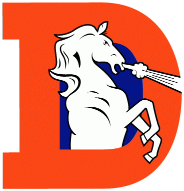

Broncos vs. RaidersHOME GAME · Empower Field at Mile High, Denver
Denver's back end is on ESPN's injury feed. As of Nov 18, ESPN lists Talanoa Hufanga (S, ankle), Brandon Jones (S, hamstring), Kris Abrams-Draine (CB, ankle) and Jaylen Waddle (WR, concussion) as QUESTIONABLE. TE Caleb Lohner is on IR. SI's Week 11 preview (Nov 17) also lists Riley Moss (CB) as questionable. ESPN's feed does not.
Las Vegas: Brock Bowers (TE, ankle), Dont'e Thornton Jr. (WR, back), Thomas Booker IV (DT, ankle) and Kwity Paye (DE, neck) are QUESTIONABLE. Patrick Johnson (DE, neck) is on IR. Bowers is the Raiders' leading receiver at 676 yards; if he sits, Michael Mayer (41 catches) is next on ESPN's depth chart.
The quarterback change: NBC Sports/Rotoworld (Nov 10) reported, citing ESPN's Adam Schefter, that No. 1 overall pick Fernando Mendoza takes over as the starter after Cousins was traded to the Vikings for a 2027 third-round pick. ESPN's depth chart has Mendoza first and Aidan O'Connell second.
Sources: ESPN game-summary injury feed for event 401873075 and ESPN depth charts (fetched Nov 18); SI Week 11 betting preview (Nov 17); NBC Sports player news (Nov 10, fetched Nov 18). Practice reports were not in hand at writing; re-check Thursday.
Latest report (updated 2026-11-19 12:37): see “The pick in one line” above.
Player matchups ESPN 2026 season statistics, depth charts and injury feed, pulled Nov 18 (Denver nine games, Las Vegas ten)
Denver's pass rush vs. a rookie in his second start
Edge: Broncos
Broncos Zach Allen 4.5 sacks · OLB
Zach Allen 4.5 sacks · OLB  Nik Bonitto 4.5 sacks, 6.5 TFL · DT
Nik Bonitto 4.5 sacks, 6.5 TFL · DT  Malcolm Roach 4 sacks, 6 TFL · NB
Malcolm Roach 4 sacks, 6 TFL · NB  Ja'Quan McMillian 3 sacks · OLB
Ja'Quan McMillian 3 sacks · OLB  Que Robinson 2 — team 26 sacks
Que Robinson 2 — team 26 sacks Raiders
Raiders Fernando Mendoza 23/37, 191 yds, 0 TD, 0 INT, sacked 6 times · LT
Fernando Mendoza 23/37, 191 yds, 0 TD, 0 INT, sacked 6 times · LT  Kolton Miller · C
Kolton Miller · C  Tyler Linderbaum · RT
Tyler Linderbaum · RT  DJ Glaze — team 17 sacks allowed, 109 yds
DJ Glaze — team 17 sacks allowed, 109 ydsMendoza has been sacked on 14% of his dropbacks. Denver has 26 sacks, and its top four rushers have 4 or more each. This is the clearest edge on the page.
Brock Bowers vs. Denver's safeties
Even Brandon Jones 55 tackles, 2 INT QUESTIONABLE · S
Brandon Jones 55 tackles, 2 INT QUESTIONABLE · S  Talanoa Hufanga 2 INT, 1 TD QUESTIONABLE · S
Talanoa Hufanga 2 INT, 1 TD QUESTIONABLE · S  Devon Key 1 INT · LB
Devon Key 1 INT · LB  Alex Singleton 107 tacklesRaiders
Alex Singleton 107 tacklesRaiders Brock Bowers 50 rec, 676 yds, 6 TD QUESTIONABLE (ankle) · TE
Brock Bowers 50 rec, 676 yds, 6 TD QUESTIONABLE (ankle) · TE  Michael Mayer 41 rec, 404 yds
Michael Mayer 41 rec, 404 ydsBowers is the one Raider who can beat Denver alone: 84.5 receiving yards a game. Both teams' availability questions sit right here, so this stays even until Friday's reports.
Jeanty vs. Denver's run defense
Edge: BroncosAlex Singleton 107 tackles, 5 TFL · LB  Justin Strnad 4.5 TFL · DT
Justin Strnad 4.5 TFL · DT  D.J. Jones · DE
D.J. Jones · DE  Eyioma UwazurikeRaiders
Eyioma UwazurikeRaiders Ashton Jeanty 123 car, 380 yds (3.1), 46 rec, 417 yds · RB
Ashton Jeanty 123 car, 380 yds (3.1), 46 rec, 417 yds · RB  Mike Washington Jr. 79 car, 298 yds (3.8)
Mike Washington Jr. 79 car, 298 yds (3.8)The Raiders run for 70.7 yards a game at 2.9 a carry. Jeanty has done more damage as a receiver than as a runner.
Nix vs. the Raiders' secondary
Edge: Broncos Bo Nix 174/287, 1,730 yds, 11 TD, 4 INT, 84.7 ratingRaiders
Bo Nix 174/287, 1,730 yds, 11 TD, 4 INT, 84.7 ratingRaiders Hezekiah Masses 3 INT, 7 PD · S
Hezekiah Masses 3 INT, 7 PD · S  Treydan Stukes 2 INT · S
Treydan Stukes 2 INT · S  Jeremy Chinn 72 tackles · CB
Jeremy Chinn 72 tackles · CB  Eric Stokes 5 PD · CB
Eric Stokes 5 PD · CB  Darien Porter 5 PD
Darien Porter 5 PDLas Vegas has allowed 28.9 points a game. Nix protects the ball (4 interceptions) but averages only 6.0 yards an attempt, so the edge comes more from the opponent than from Denver's offense.
Waddle and Sutton vs. the Raiders' corners
Even Jaylen Waddle 30 rec, 337 yds QUESTIONABLE (concussion) · WR
Jaylen Waddle 30 rec, 337 yds QUESTIONABLE (concussion) · WR  Courtland Sutton 25 rec, 266 yds · WR
Courtland Sutton 25 rec, 266 yds · WR  Pat Bryant 13 rec, 189 yds, 2 TDRaidersHezekiah Masses · CB Eric Stokes · NB
Pat Bryant 13 rec, 189 yds, 2 TDRaidersHezekiah Masses · CB Eric Stokes · NB  Taron Johnson · CB
Taron Johnson · CB  Jermod McCoy
Jermod McCoyNo Denver receiver averages 40 yards a game, and the leader is in concussion protocol. Masses' three interceptions balance the matchup.
Crosby vs. Denver's tackles
Edge: Broncos Garett Bolles · LG
Garett Bolles · LG  Ben Powers · C
Ben Powers · C  Luke Wattenberg · RG
Luke Wattenberg · RG  Quinn Meinerz · RT
Quinn Meinerz · RT  Mike McGlinchey — 11 sacks allowed, 57 ydsRaiders
Mike McGlinchey — 11 sacks allowed, 57 ydsRaiders Maxx Crosby 5 sacks, 10 TFL · DE
Maxx Crosby 5 sacks, 10 TFL · DE  Kwity Paye 3 sacks QUESTIONABLE · DE
Kwity Paye 3 sacks QUESTIONABLE · DE  Malcolm Koonce 3 sacks · LB
Malcolm Koonce 3 sacks · LB  Quay Walker 2 sacks
Quay Walker 2 sacksNix has the best sack rate among the 32 leading passers (3.7%). Crosby's 10 tackles for loss make him the one rusher Denver has to plan for.
Denver's run game vs. the Raiders' linebackers
Even Jonah Coleman 47 car, 191 yds, 3 TD (4.1; listed first on the depth chart) · RB
Jonah Coleman 47 car, 191 yds, 3 TD (4.1; listed first on the depth chart) · RB  J.K. Dobbins 98 car, 324 yds, 3 TD (3.3) · RB
J.K. Dobbins 98 car, 324 yds, 3 TD (3.3) · RB  RJ Harvey 25 rec, 217 ydsRaiders
RJ Harvey 25 rec, 217 ydsRaiders Nakobe Dean 107 tackles, 7.5 TFL · LB Quay Walker 80 tackles, 7 TFL · DT
Nakobe Dean 107 tackles, 7.5 TFL · LB Quay Walker 80 tackles, 7 TFL · DT  Thomas Booker IV QUESTIONABLE
Thomas Booker IV QUESTIONABLEDenver runs for 91.4 yards a game at 3.7 a carry. Dean and Walker have 14.5 tackles for loss between them, which also matters for the tackles-for-loss prop.
Wide receivers, the other way
Edge: Broncos Pat Surtain II 33 tackles · CB
Pat Surtain II 33 tackles · CB  Jahdae Barron 34 tackles · CB
Jahdae Barron 34 tackles · CB  Riley Moss 8 PD · CB
Riley Moss 8 PD · CB  Kris Abrams-Draine QUESTIONABLERaiders
Kris Abrams-Draine QUESTIONABLERaiders Tre Tucker 34 rec, 538 yds, 4 TD (15.8 a catch) · WR
Tre Tucker 34 rec, 538 yds, 4 TD (15.8 a catch) · WR  Dont'e Thornton Jr. QUESTIONABLE · WR
Dont'e Thornton Jr. QUESTIONABLE · WR  Cody White 3 TD
Cody White 3 TDTucker is a deep threat, but a rookie under pressure is unlikely to find him often. Surtain is on the field.
Kickers
Edge: Raiders Wil Lutz 16 of 19, long 53Raiders
Wil Lutz 16 of 19, long 53Raiders Matt Gay 21 of 23, long 59
Matt Gay 21 of 23, long 59Gay has better range and accuracy. With a 40.5 total, field goals could decide the points prop.
Punters
Edge: Raiders Jeremy Crawshaw 48.4 gross, 19 of 44 inside the 20Raiders
Jeremy Crawshaw 48.4 gross, 19 of 44 inside the 20Raiders AJ Cole 52.1 gross, 14 of 34 inside the 20
AJ Cole 52.1 gross, 14 of 34 inside the 20Cole kicks four yards farther per punt; Crawshaw pins more.
Returners
Edge: Raiders Marvin Mims Jr. 25.8 KR, 10.7 PR · RJ Harvey 29.2 KRRaiders
Marvin Mims Jr. 25.8 KR, 10.7 PR · RJ Harvey 29.2 KRRaiders Dylan Laube 31.6 KR, 95-yard TD
Dylan Laube 31.6 KR, 95-yard TDLaube has the only kick-return touchdown in this matchup.
Where are Bo Nix and Fernando Mendoza? Nix's 2026 numbers against each team's leading passer (32 players), through Week 10
Answer: Nix is still bottom third as a passer and first in the league at staying clean. Mendoza has too few snaps to rank, and those snaps were rough. Among each team's leading passer, Nix ranks 21st in rating (84.7), 24th in completion rate and 28th in yards per attempt (6.0). He ranks 9th-lowest in interception rate and has the lowest sack rate of all 32 (3.7%). Mendoza is now the Raiders' leader on ESPN's sheet with 191 yards on 37 attempts: 75.4 rating, 5.2 yards an attempt, 6 sacks. Most of the Raiders' 20 passing touchdowns came before the trade.
| Stat | Nix | Rank | Median | Best |
|---|---|---|---|---|
| Passer rating | 84.7 | 21 of 32 | 91.5 | Joe Burrow 117.7 |
| Completion % | 60.6 | 24 of 32 | 63.9 | Joe Burrow 74.7 |
| Yards per attempt | 6.0 | 28 of 32 | 7.0 | Brock Purdy 9.0 |
| Pass yards per game | 192.2 | 23 of 32 | 230.9 | Joe Burrow 310.6 |
| Passing TDs | 11 | 17 of 32 | 11.5 | Joe Burrow 27 |
| TD % | 3.8 | 24 of 32 | 4.7 | Trevor Lawrence 8.1 |
| INT % (lowest = 1st) | 1.4 | 9 of 32 | 1.9 | — |
| Sack % (lowest = 1st) | 3.7 | 1 of 32 | 6.6 | Bo Nix 3.7 |
| QB rushing yards | 116 | 12 of 32 | 97.5 | Josh Allen 290 |
ESPN 2026 season statistics by athlete, fetched Nov 18. Each team's leading passer is counted by current team, so some leaders, Mendoza among them, have small samples. Sack % = sacks / (attempts + sacks).
Coaching staffs tenure, experience, and what the beat has said this season
Broncos
- Sean Payton, head coach. Denver is 7-2 and has won seven straight since the Week 4 loss at San Francisco (ESPN schedule, Nov 18), and is 7-2 against the spread (SI, Nov 17). Rest edge: Denver had its bye in Week 10.
Raiders
- Klint Kubiak, head coach. He handed the offense to Mendoza after the Cousins trade (NBC Sports, Nov 10). Las Vegas is 4-6 and 6-4 against the spread, and the Over is 7-3 in its games (SI, Nov 17).
Records: ESPN team schedules (Nov 18). Trends: SI Week 11 preview (Nov 17). Staff details beyond the head coaches were not confirmed this turn and are left out.
Missed tackles Tackles for loss, the prop this week: both teams' totals and leaders
This week's prop is tackles for loss, not missed tackles. Denver has 52 tackles for loss in nine games (5.8 a game); Las Vegas has 46 in ten (4.6). That is about 10.4 a game between them before adjusting for this matchup.
Denver's leaders: Bonitto 6.5, Roach 6, Singleton 5, Allen 4.5, Strnad 4.5, McMillian 4, Tillman 4. Las Vegas: Crosby 10, Dean 7.5, Walker 7, Paye 4.
Why the Over is in play: Mendoza was sacked six times in 37 attempts, and the Raiders run at 2.9 yards a carry. Both point to negative plays from Denver's front. On the other side, Denver runs at 3.7 a carry into the Raiders' linebackers, who have 14.5 tackles for loss between them.
ESPN 2026 team and player defensive statistics, fetched Nov 18. Missed-tackle counts were not checked this turn.
Reassessment How Mack's pick and the market compare, and what would change them
Mack's line is Broncos −8.9; the market is −10 with a 40.5 total. Mack has Denver winning (75%), but the market is a point beyond his number, so his spread side is the Raiders. ESPN's predictor is more bullish at 86.3% for Denver. SI's preview had Broncos −9.5 and picked Denver to cover.
Total: Over 40.5. Denver's games have averaged 42.7 combined points and the Raiders' games 54.0; the Over is 7-3 in Raiders games (SI).
What would change it: if Bowers is ruled out, the Raiders' best receiving option is gone and the Raiders side weakens. If Waddle and two of the safeties sit, Denver's margin shrinks. A Mendoza injury would bring in O'Connell.
Odds: DraftKings via ESPN (frozen at board build); predictor: ESPN game summary 401873075 (Nov 18); SI Week 11 preview (Nov 17).
Unit by unit ESPN team statistics through Week 10, fetched Nov 18; each row says which side has the edge and why
| Unit | Broncos | Raiders | Edge |
|---|---|---|---|
| Scoring | 22.0 points a game; 198 scored, 186 allowed | 25.1 points a game; 251 scored, 289 allowed | Broncos |
| Denver allows 20.7 a game; Las Vegas allows 28.9. | |||
| Passing offense | 185.9 net yards a game · Nix 84.7 rating | 243.5 net yards a game (mostly Cousins) | Even |
| The Raiders' season passing numbers mostly belong to a quarterback now in Minnesota. | |||
| Rushing offense | 91.4 yards a game · 3.7 a carry | 70.7 yards a game · 2.9 a carry | Broncos |
| Neither runs well; Denver runs less badly. | |||
| Protection | 11 sacks allowed, 57 yds | 17 sacks allowed, 109 yds | Broncos |
| Mendoza alone took six sacks in his first start. | |||
| Pass rush and havoc | 26 sacks · 52 TFL · 51 passes defended | 22 sacks · 46 TFL · 35 passes defended | Broncos |
| Denver leads every column. | |||
| Takeaways | 12 takeaways · 7 giveaways · +5 | 16 takeaways · 13 giveaways · +3 | Even |
| Las Vegas takes it away more but gives it away almost twice as often. | |||
| Third down | 32.4% | 43.4% | Raiders |
| Denver's offense is poor on third down. | |||
| Red zone TD % | 63.0% | 51.4% | Broncos |
| Denver finishes drives; the Raiders kick. | |||
| Special teams | Lutz 16/19 · 48.4 gross punt | Gay 21/23, long 59 · 52.1 gross · KR TD | Raiders |
| Better kicker, punter and return threat. | |||
Points allowed summed from ESPN schedule results (Denver 9 games, Las Vegas 10); other figures from ESPN 2026 team statistics, fetched Nov 18.